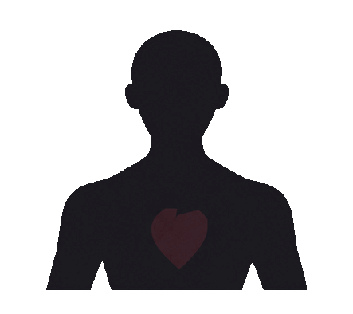

The Collapse:
Instant Evaporation of Shelter
According to the joint Fifth Rapid Damage and Needs Assessment (RDNA5) by the World Bank, Government of Ukraine, European Commission, and United Nations (published February 23, 2026), as of the December 31, 2025 data cutoff, approximately 14% of Ukraine’s total housing stock (a share of residential buildings, not total population) had been damaged or destroyed, affecting more than 3 million households.
VIEW ACCESSIBLE TEXT SUMMARY & VERIFIED DAMAGE DATA TABLE
Visual Summary: Conceptual illustration (6 floors, 24 units) inspired by the engineering assessment of the damaged residential building at V. Lobanovsky Avenue 6-A in Kyiv (Lisenyi et al., 2022). It is not an exact architectural reconstruction of the original 25-story structure.
| Sector / Indicator | Reported Figure | Data Cutoff | Primary Source & Publication Date |
|---|---|---|---|
| Ukraine Housing Stock Damaged or Destroyed | ~14% of housing stock (3M+ households) | December 31, 2025 | World Bank, Gov. of Ukraine, European Commission, UN — RDNA5 (Feb 23, 2026) |
| Educational Institutions Affected by Bombings and Shelling | 3,798 affected (365 completely destroyed) | December 2023 | Ministry of Education and Science of Ukraine (Feb 2024) |
Displacement:
Fracturing the Domestic Fabric
The full-scale invasion triggered large-scale internal and cross-border displacement (IOM DTM, December 2025; UNHCR, December 2025). To examine the human impact across distinct living situations, populations are categorized into three cohorts: Non-Displaced Persons (NDP) residing in Ukraine who have not experienced forced displacement, Internally Displaced Persons (IDPs) forced to flee their homes who remain within Ukraine’s borders, and Ukrainian Refugees Worldwide who left Ukraine and reside outside the country.
Methodological Note: Because IOM internal displacement estimates and UNHCR cross-border refugee records are compiled using distinct tracking methodologies and dynamic movements occur between groups, the ~3.7 million IDPs and ~5.9 million refugees worldwide should not be summed as a single deduplicated total displaced population.
Non-Displaced Persons (NDP)
Individuals residing in Ukraine who have not been forced to flee their habitual homes; this category encompasses residents across diverse regions and does not imply all live in active frontline zones.
Internally Displaced Persons (IDPs)
People forced to flee their homes due to the war who remain within Ukraine’s internationally recognized borders across central, northern, southern, and western regions.
Ukrainian Refugees Worldwide
People who left Ukraine due to the war and reside outside the country—across European host countries as well as North America and other regions globally.
VIEW ACCESSIBLE TEXT SUMMARY & DISPLACEMENT COHORT TABLE
Map Summary: The canvas illustrates conceptual movement streams from war-affected cities (such as Kyiv, Kharkiv, and Mariupol) to domestic hubs (such as Lviv and Vinnytsia) and selected European host cities (Warsaw, Berlin, Prague). These trajectories are illustrative schematics rather than exhaustive geographic routing; Ukrainian refugees are recorded across Europe and globally. Do not add 3.7 million IDPs and 5.9 million refugees together as a deduplicated total.
| Population Cohort | Geographic Scope | Reported Scale | Source & Data Cutoff |
|---|---|---|---|
| Non-Displaced Persons (NDP) | Within Ukraine (non-displaced residents) | Comparison cohort | Epidemiological comparison definition |
| Internally Displaced Persons (IDPs) | Within Ukraine’s borders | ~3.7 million | IOM Displacement Tracking Matrix (DTM), Dec 2025 |
| Ukrainian Refugees Worldwide | Outside Ukraine (Europe & globally) | ~5.9 million | UNHCR Operational Data Portal, Dec 2025 |
Invisible Wounds:
The Steepening Psychological Fault Lines
A nationwide online cross-sectional survey conducted from October 26, 2022 to January 25, 2023, involving 3,173 Ukrainian adults, examined self-reported symptoms across displacement groups (Lushchak et al., 2023):
- Non-Displaced Persons (NDP): n = 1,954 (992 / 1,954 met criteria)
- Internally Displaced Persons (IDP): n = 505 (280 / 505 met criteria)
- Refugees: n = 714 (444 / 714 met criteria)
The reported percentages represent respondents meeting DSM-5-based PTSD symptom criteria using the PCL-5 assessment, not clinically confirmed PTSD diagnoses or nationally representative prevalence estimates.
Study Respondents Meeting DSM-5-Based PTSD Symptom Criteria
PCL-5 Screening (Oct 26, 2022 – Jan 25, 2023)VIEW ACCESSIBLE STUDY SAMPLE & SCREENING DATA TABLE
Methodological Note: Nationwide online cross-sectional survey conducted October 26, 2022 – January 25, 2023 (total N = 3,173 Ukrainian adults; PCL-5 assessment). These percentages represent screening-based symptom criteria, not clinically confirmed PTSD diagnoses, and should not be interpreted as nationally representative prevalence estimates.
| Group | Respondents Meeting Criteria / Sample Size | Percentage | Survey Period |
|---|---|---|---|
| Non-Displaced Persons (NDP) | 992 / 1,954 (n = 1,954) | 50.8% | Oct 26, 2022 – Jan 25, 2023 |
| Internally Displaced Persons (IDP) | 280 / 505 (n = 505) | 55.4% | Oct 26, 2022 – Jan 25, 2023 |
| Refugees | 444 / 714 (n = 714) | 62.2% | Oct 26, 2022 – Jan 25, 2023 |
The Limits of Repair:
Can Rebuilt Walls Mend Broken Lives?
International reconstruction programs mobilize resources to rebuild damaged housing, schools, and civic infrastructure (World Bank et al., 2026). Yet physical reconstruction and human psychological healing do not follow identical trajectories. Use the conceptual visual stage slider below to explore brick-by-brick structural rebuilding. The human-impact visual beside it plays as an independent looping animation.
Conceptual Visual Metaphor Only: Kintsugi seams and visual stages are an artistic design metaphor—not empirical data, an engineering safety rating, or a quantitative psychological recovery scale.
Damaged masonry, concrete slabs, and exterior walls can be rebuilt course by course and sealed with visible golden Kintsugi joints—a conceptual metaphor for restoring physical shelter over time.
Why IRREVERSIBLE: War can leave deep, long-lasting psychological wounds that do not automatically vanish when buildings are repaired. Not all psychological trauma is permanent—with psychotherapy, social support, and time, many survivors experience meaningful recovery even as memories remain part of their lives.

VIEW ACCESSIBLE SUMMARY OF ACT 04 CONCEPTUAL VISUAL METAPHOR
Core Synthesis: Moving the slider from Stage 0% to Stage 100% lays bricks upward until the residential building facade is visually restored with golden Kintsugi seams. Beside it, the supplied looping human-and-fractured-heart GIF serves as a conceptual metaphor for the lasting psychological impact of war—illustrating that while physical spaces can be rebuilt, psychological wounds may persist, though evidence-based psychotherapy, social support, and time can foster meaningful recovery.
“IRREVERSIBLE does not mean recovery is impossible—it means war leaves a profound mark on human lives that concrete alone cannot erase. With psychotherapy, social support, and time, survivors can heal and rebuild meaning alongside their cities.”